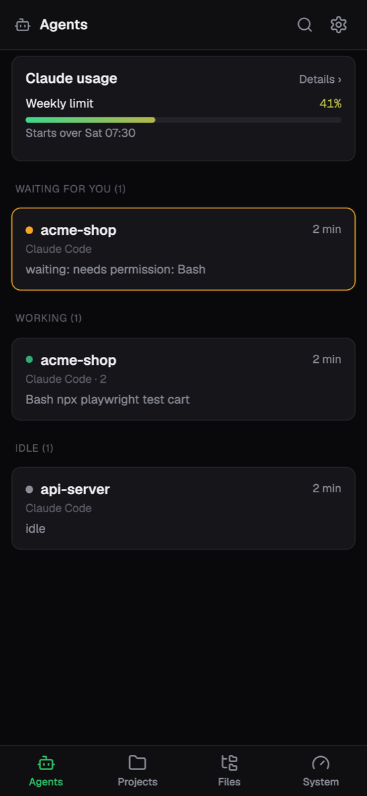
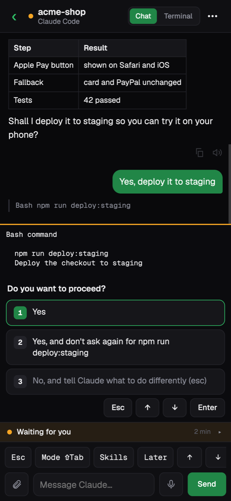
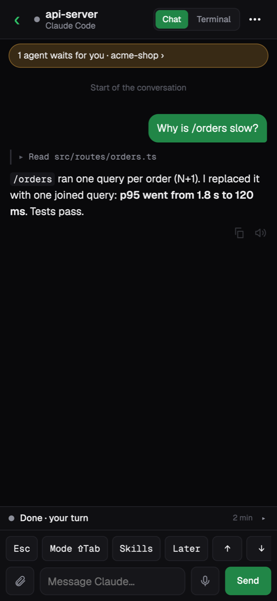
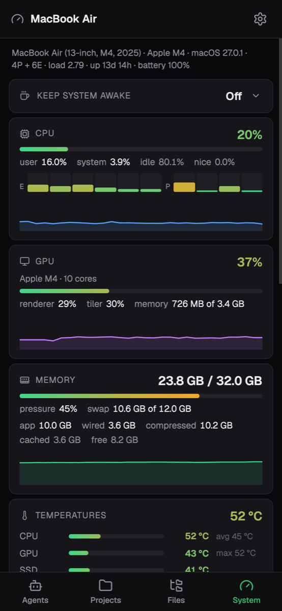
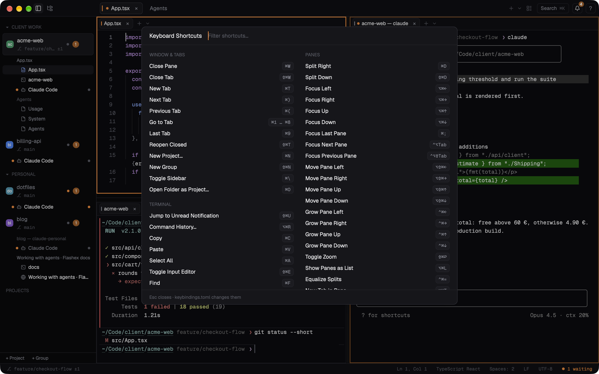
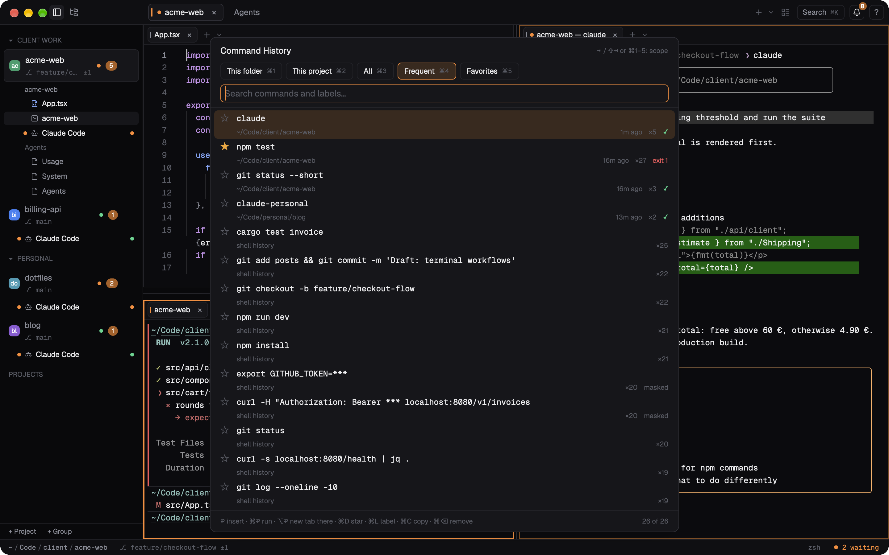

Quick start
From an empty window to an agent at work in a few minutes.
On Windows and Linux the keys below use Ctrl where they say ⌘ and Alt where they say ⌥; Flashex's own shortcuts that a shell would want take Shift too (Ctrl+Shift+T a new tab, Ctrl+Shift+P the palette). ? › Keyboard Shortcuts lists them as your computer writes them. The first start shows a welcome card with these first steps; Welcome to Flashex in the palette shows it again.
The window
- The sidebar on the left lists your projects, optionally in groups. Under each project are its terminals, editors and browser panels, with an agent's state as a dot. ⌘\ shows or hides it.
- The top row holds the active project's tabs. Each tab has its own layout of panes.
- Panes fill the rest. A pane can hold several tabs of its own (terminals, editors, a browser, a dashboard), shown in its tab strip.
- The status bar at the bottom shows the focused terminal's folder and the project's branch, or the focused editor's language, indentation and line endings (click them to change them).
Your first project
A project is a folder you work in. Click + Project at the foot of the sidebar or press ⌘N. The dialog lists folders it found (git repositories, folders your terminals are in, projects you closed lately); type to filter, or type a path such as ~/Dev/app. Choose Folder… opens the macOS folder panel, and New Folder… makes a new folder (optionally with git init) and opens it. ⌘O opens a folder as a project straight from the folder panel.
The project opens with a terminal in its folder. The file tree (⌘B) shows its files and its Source Control view. See Projects and the sidebar for groups, colours and more.
Terminals and splits
| To | Press |
|---|---|
| Split the focused pane to the right / down | ⌘D ⇧⌘D |
| Move the focus between panes | ⌥⌘← ⌥⌘→ ⌥⌘↑ ⌥⌘↓ |
| A new tab in the project (top row) | ⌘T |
| A new terminal tab in the focused pane | ⌥⌘T |
| Zoom the focused pane | ⇧⌘↩ |
| Close the focused pane tab / the whole tab | ⌘W ⇧⌘W |
| Bring back what you closed | ⇧⌘T |
A new split starts in the focused terminal's folder. The + in a pane's tab strip opens a terminal; its ⌄ opens a menu with New Terminal, New Claude Code, New File, Open File…, New Browser, Split Right and Split Down. More in Panes, tabs and layouts.
Running Claude Code
Type claude in any terminal, or choose New Claude Code from the ⌄ menu (it starts the claude your login shell would). To let Flashex know when an agent is running, waiting for you or done, install Claude Code's hooks once:
❯ flashex setup claudeIt shows the change to ~/.claude/settings.json and asks first (Settings › AI agents › Claude Code hooks does the same). From then on:
- the sidebar shows a dot for each agent: orange when it waits for you, green while it runs, red on an error;
- when an agent finishes or needs you while you look elsewhere, its terminal is marked unread and you get a notification; ⇧⌘U jumps to the oldest unread one;
- the Agents dashboard (⌘K › Agents Dashboard) shows every session at once.
Everything about agents is in Working with agents.
Your phone
Follow and answer your agents from your phone: Phone Access… in the palette turns it on and shows a QR code. Your computer reaches the phone through Tailscale (install it on both and sign in to the same account), so nothing is open to the internet; Flashex sets up Tailscale Serve for you and says what it waits for. Scan the code with the phone's camera, check that the phone and the computer show the same code, and allow it. Then add Flashex to the phone's home screen: the app says the steps for the browser it is open in (Chrome on Android; Safari, Chrome, Edge or Firefox on an iPhone).




On the phone: every agent as a chat you can answer (and its questions as buttons), terminals you type into, notifications when an agent waits for you or is done, the project's files and changes, and the System dashboard.
The command palette
⌘K finds any action, project or tab: type a few letters and press Return. Actions show their shortcut, so the palette is also the quickest way to learn them. Some things live only there, such as the dashboards, layouts, Keep Mac Awake, Reload Claude Session and Restart Flashex. ⌘P opens a file of the project, and ⌘? lists every shortcut in effect.

More in the terminal
Command blocks
Shell integration for zsh, bash and fish (set up automatically) turns every command into a block with its folder, duration and exit code. ⌘↑ and ⌘↓ jump between commands, ⇧⌘↑ and ⇧⌘↓ select whole ones, and ⌥⌘[ folds a finished command's output (⌥⌘] unfolds it). Point at a block for its tools: copy the command or its output, rerun it, fold it, send it to an agent, or save it as a workflow with parameters. While Claude Code or another full-screen program runs, its terminal looks as in any other terminal; it becomes a block again when it ends.
The compact prompt shows the folder and the git branch; click the folder to go to another one. ⇧⌘E turns the prompt's editor (syntax colours, multi-line editing) off and on for one terminal.
AI help (optional)
At an empty prompt, type # find files bigger than 100 MB and press Return: a command for your system, shell and folder is put into the line for you to check. It never runs by itself, and the # line never reaches your shell or its history. A failed command's block offers Explain and Fix. Flashex uses the AI you already have: Claude Code, Codex or Gemini CLI with their own login, your own command, or any OpenAI-compatible server, local models included. It never needs an API key of its own, and nothing is sent until you press Return or click. Grey suggestions from your history appear as you type (no AI, offline); → takes one, ⌥→ one word. Settings › AI chooses the provider; [ai] has the details.
Command history
History › Command History… (⌥⌘R anywhere, ⌃R at a prompt with the prompt's editor on, or Command History in the palette) lists the commands you ran, each once with how often, where it ran last, when, and whether it failed. Five scopes sit above the list: This folder and This project (the focused terminal's), All (your shell's own history too), Frequent (often and lately first) and Favorites. ⇥, ⇧⇥ or ⌘1–⌘5 switch between them, and the picker opens on the one you used last. Typing filters as in the palette, also by a favorite's label.
- ↩ puts the command at the prompt; it never runs by itself. ⌘↩ runs it now, ⌥↩ opens a new tab in the folder where it last ran and puts it there.
- ⌘D or the star adds it to Favorites, ⌘L gives a favorite a short label, and in Favorites ⌥↑ and ⌥↓ move it (or Sort by Use).
- ⌘C copies it; ⌘⌫ removes it from Flashex's history, and the notice's Undo (or ⌘Z) puts it back. Your shell's own history file is never changed. Right-click a row for the same.
- Commands that start with a space are never saved, and lines that look like they hold a password or token are shown masked.

Images, links and search
- Pictures from
kitty +kitten icat,chafa,timg,yazi,img2sixelorimgcatshow inline and scroll with their block. - Paths that programs print (
src/main.rs:10:5,./shots/a.png) and links open with ⌘-click; a picture's path shows a small preview when you rest the pointer on it. - ⌘F searches the whole history (regex, whole word, case).
- ⌘V with only a picture on the clipboard pastes it into Claude Code, as its own Ctrl+V does.
Settings
⌘, opens Settings, grouped as Appearance, Terminal, Editor, AI, Browser and General. It edits ~/.config/flashex/config.toml and keeps your comments; you can also edit the file yourself, and changes apply as soon as you save. Every setting is in the Configuration reference.